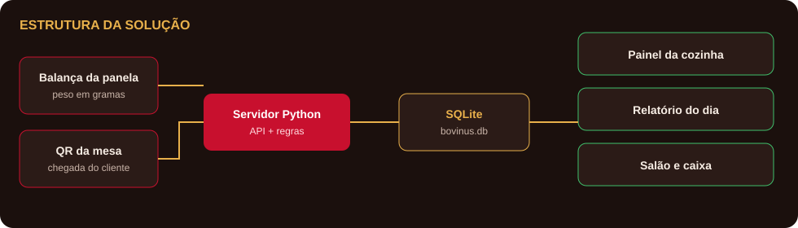
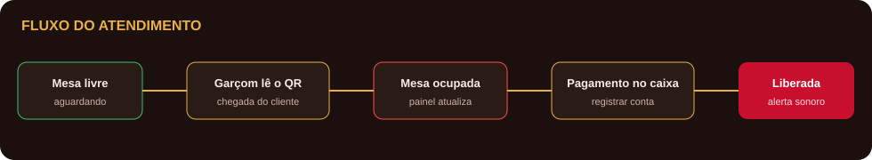
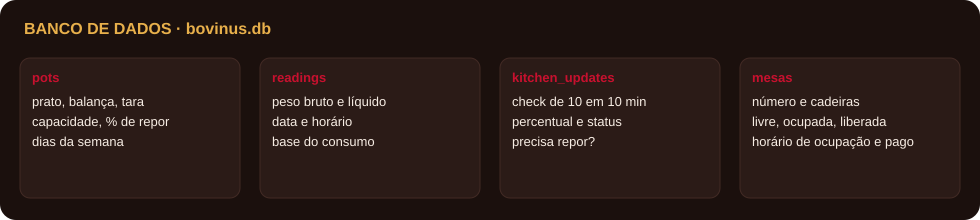
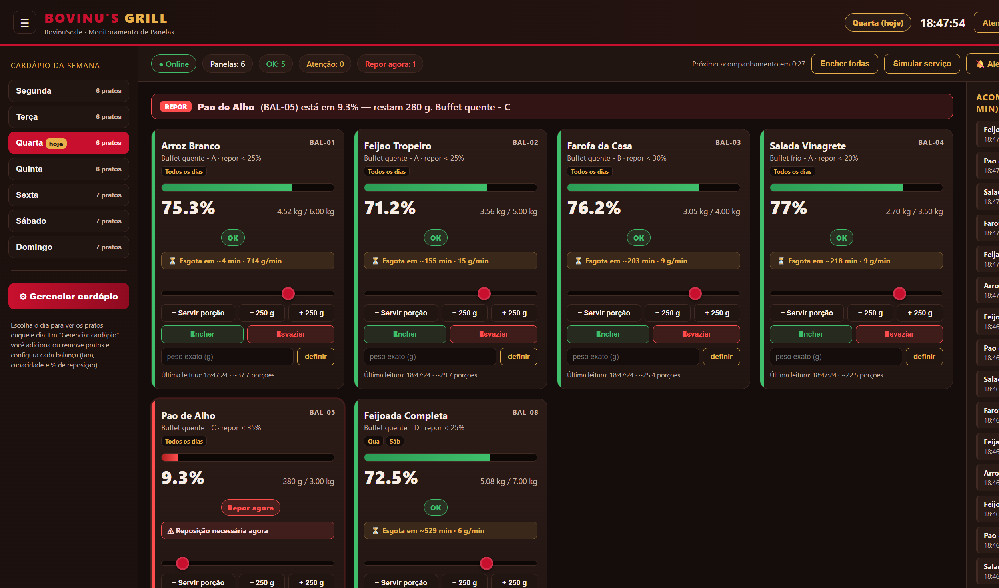
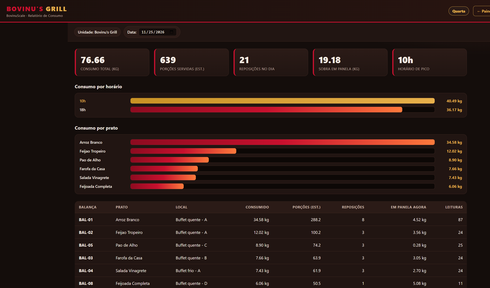
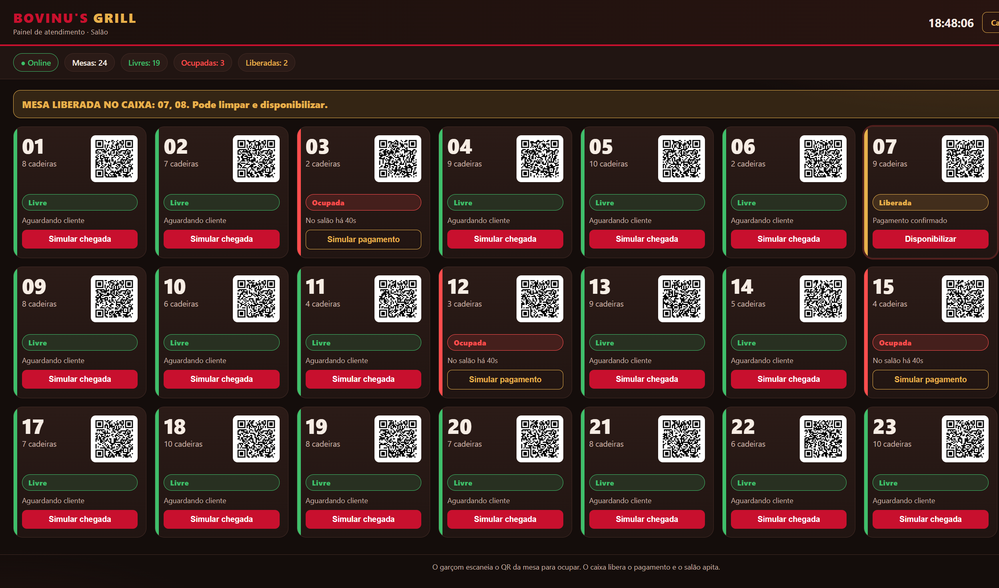
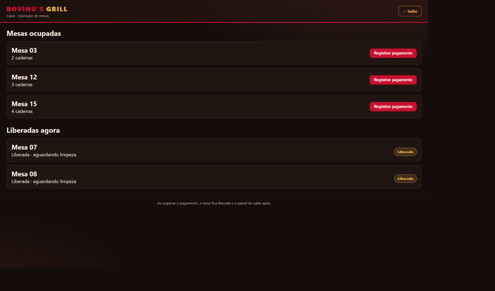
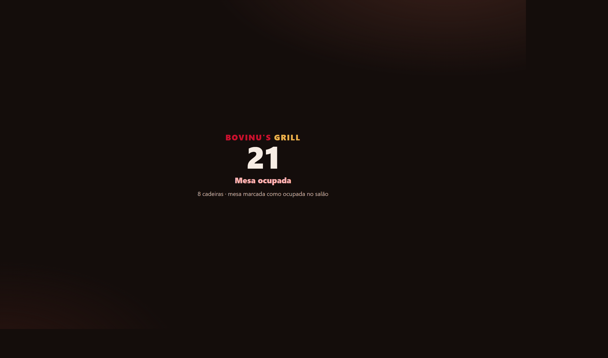

1. Descrição do problema
No buffet de uma churrascaria, cada panela esvazia em ritmo diferente. A cozinha só percebe a falta quando o cliente já encontrou a cuba vazia, ou repõe cedo demais e aumenta a sobra no fim do serviço.
Não havia um registro simples do que foi de fato consumido em cada panela ao longo do dia. Sem esse número, a casa não compara pratos, não enxerga o horário de pico e não separa consumo de reposição.
No salão, o problema é outro e acontece ao mesmo tempo: a equipe não tem uma visão única de qual mesa está livre, ocupada ou já paga. O garçom anota a chegada de um jeito, o caixa baixa a conta de outro, e a mesa demora a ser liberada para o próximo cliente.
2. Solução proposta
O BovinuScale coloca uma balança debaixo de cada panela e um painel único para a casa. O software tem duas frentes ligadas ao mesmo servidor:
- Cozinha. A cada 10 minutos o painel mostra quanto ainda há em cada panela e sinaliza a reposição. No fim do dia, o relatório soma o que foi consumido por balança.
- Salão e caixa. 24 mesas numeradas, com 2 a 10 cadeiras. O garçom escaneia o QR da mesa e ela fica ocupada. Quando o caixa registra o pagamento, a mesa fica liberada e o painel do salão apita.
O cardápio muda conforme o dia da semana. Pratos fixos ficam todos os dias. Pratos do dia, como a feijoada, só aparecem nos dias cadastrados. Cada balança é configurada em quilos ou gramas: tara da panela, capacidade e percentual de reposição.
Preços de cardápio, horários de unidade e promoções não foram inventados. O que não está medido pela balança ou cadastrado pela casa não aparece como número oficial.
3. Passos de desenvolvimento
- Servidor em Python, sem instalação extra além da biblioteca do QR, com banco SQLite local.
- Recepção do peso da balança e cálculo do alimento líquido, descontando a tara da panela.
- Painel da cozinha com status, alerta de reposição e acompanhamento de 10 em 10 minutos.
- Relatório do dia: consumo, porções estimadas, reposições, sobra e horário de pico.
- Cardápio por dia da semana e cadastro metrificado de cada balança.
- Painel do salão, QR de check-in do garçom e tela do caixa com alerta sonoro de mesa liberada.
4. Estrutura e integração


Cozinha, salão e caixa não são sistemas separados. Os três leem e gravam o mesmo servidor. A balança envia o peso. O QR muda o status da mesa. O caixa dispara a liberação. O painel do salão consulta esse status a cada 2 segundos e apita só quando uma mesa acaba de ser paga.
A integração com a balança real é um único envio:
POST /api/readings com o identificador da balança e o peso bruto em gramas. No protótipo, o mesmo efeito é simulado no próprio card da panela.
5. Banco de dados

| Tabela | Para que serve |
|---|---|
| pots | Prato, balança, tara, capacidade, percentual de reposição e dias servidos. |
| readings | Cada pesagem. O consumo do dia é a soma das quedas de peso. Subida de peso é reposição, não consumo. |
| kitchen_updates | Histórico dos acompanhamentos feitos de 10 em 10 minutos. |
| mesas | Número, quantidade de cadeiras e status: livre, ocupada ou liberada, com os horários. |
Arquivo físico: bovinus.db, criado na primeira execução. Código: server.py, telas em web/.
6. Capturas da solução





7. Vídeo da solução prática
Vídeo de 1 minuto e 22 segundos, narrado em português, com as telas reais do sistema.
Enquanto o sistema local estiver ligado, o mesmo arquivo também abre em http://127.0.0.1:8000/bovinascale-demo.mp4.
8. Apresentação
Cinco slides com o problema, os passos de desenvolvimento, a estrutura, a integração das frentes e o fechamento da demonstração.
Abrir a apresentação no navegador · arquivo BovinuScale-apresentacao.pptx na mesma pasta.
9. Arquivos para a avaliação
server.py— servidor, regras, banco e APIs.web/— cozinha, relatório, salão, caixa e check-in.qr_svg.py— geração do QR de cada mesa.simulator.py— simulação das balanças sem hardware.bovinus.db— banco gerado em execução.entrega/— este documento, capturas, diagramas, slides e vídeo.